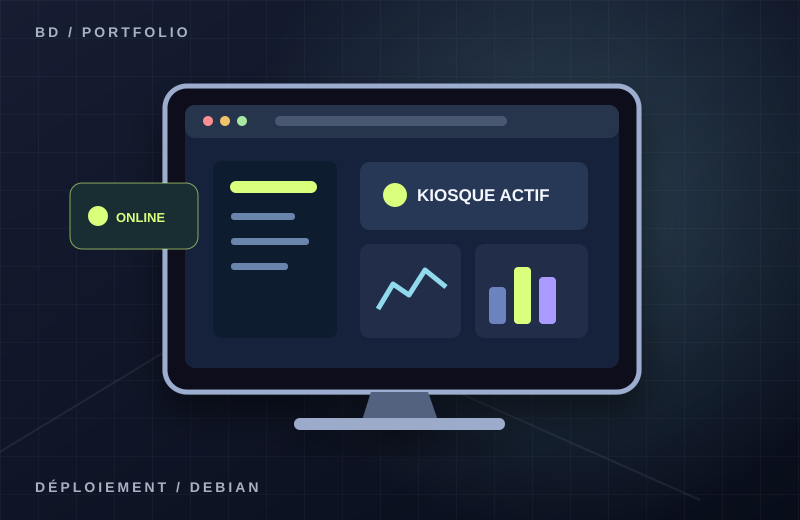
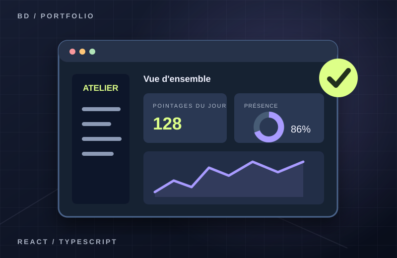
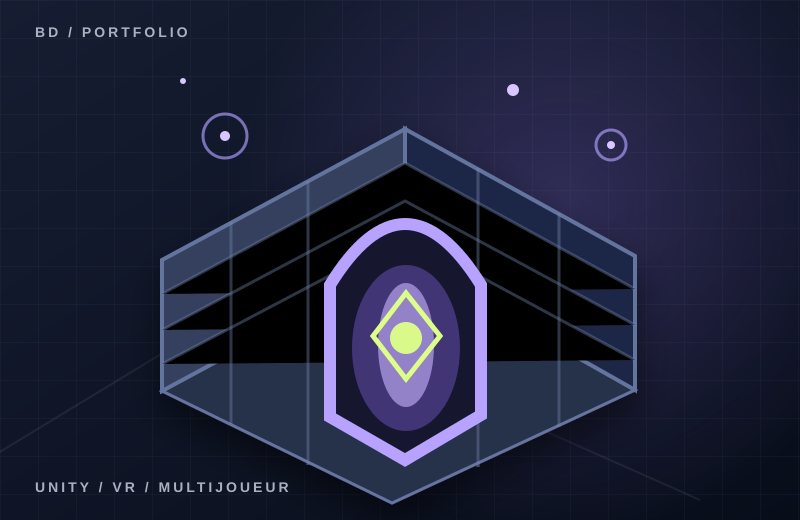
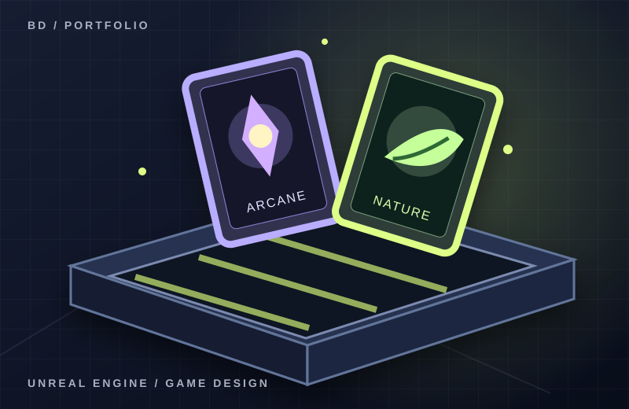
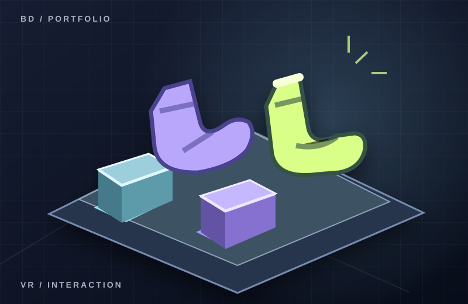
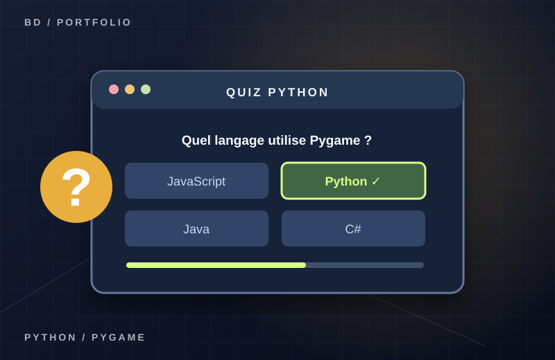

Kiosques d'atelier
Des postes Debian dédiés aux opérateurs : installation, configuration, affichage web en mode kiosque et déploiement sur le terrain.
DebianChromiumDéploiement
Moi, c'est Benoît. Je développe des expériences interactives, des jeux et des outils concrets, de l'idée jusqu'au prototype fonctionnel.
Des expériences immersives aux outils métier : des projets où la technique sert une idée précise.

Des postes Debian dédiés aux opérateurs : installation, configuration, affichage web en mode kiosque et déploiement sur le terrain.

Une application interne de suivi des pointages développée avec une interface React et un backend TypeScript / Express.

Un escape game coopératif sur Meta Quest 3 : runes à tracer, gemmes à assembler et énigmes synchronisées entre deux joueurs.

Un univers de jeu autour de la fabrication et de la collection de cartes, avec progression, raretés et interactions.

Un jeu en réalité virtuelle où l'on ramasse des chaussettes pour les déposer dans des bacs, en interagissant avec l'environnement.

Un quiz de culture générale avec plusieurs thèmes, modes d'entraînement et classé, score à multiplicateur et classement. Contribution à l'interface du projet en équipe.
Visuels conceptuels créés pour présenter les projets : ils ne sont pas des captures d'écran du gameplay ou des applications. Les liens GitHub mènent aux dépôts publics disponibles.
Diplômé du BUT Informatique de l'Université de Lille et du Master Sciences et Technologies du Métavers à l'INSA Valenciennes, je relie développement logiciel, infrastructure et expériences immersives.
Chez Heuille & Fils, j'ai développé des logiciels industriels et déployé des kiosques d'atelier. Mes expériences chez Alstom et Oslo m'ont aussi amené à travailler sur des macros Excel, le parc informatique, les systèmes et le réseau.
Développement industriel · kiosques d'atelier
Macros Excel · parc informatique
Systèmes et réseaux · chatbot Python · GLPI
INSA Valenciennes
Université de Lille
Je m'intéresse aux projets qui croisent logiciel, création et nouvelles formes d'interaction.